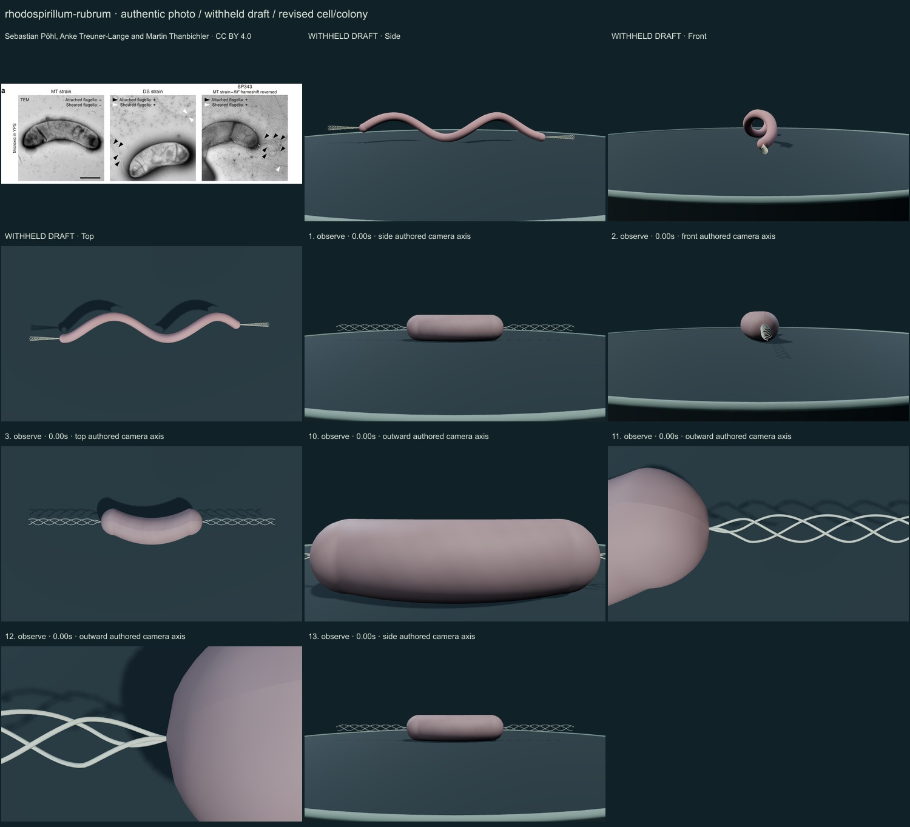
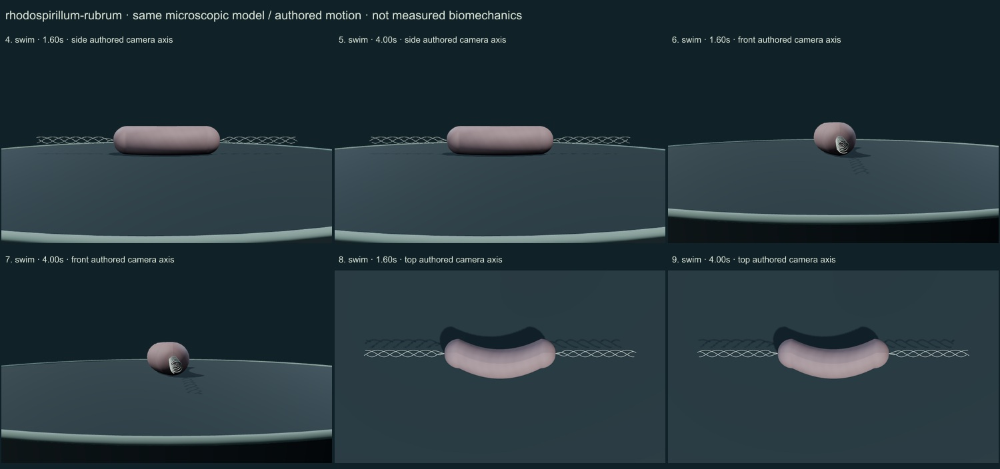

PhenoVoxel Archive · v0.6.26 · October25,2026
300 records after verified publication; all50 original held drafts have initial corrections, including all46 in the renewed foreground request.250 additional species remain to550. Release register.
Sebastian Pöhl, Anke Treuner-Lange and Martin Thanbichler · CC BY 4.0. Primary publishedOct20,2026. Selected full caption and description additionally read via indexed publisher mirror micropublication.net onOct25 after .org parser omitted text. TEM microoxic YPS cells, uranyl-acetate preparation; grayscale is not living pigment. Figure1a MT nonflagellated vsDS motile flagellated vsSP343 restored. Publishedbar1µm applies tophotograph only, not normalizedmodel. No molecular,genome or culture simulation. Figure1a only cropped from original, resized1200width JPEG93. MT,DS,SP343 labels,attached/sheared arrows and scale retained; figures1b-c omitted. No generative alteration.
Exact source/download/derivative checksums and crop regions are preserved in the linked data. Tabellaria crops contain only panelg; Rhodospirillum contains only Figure1a and retains strain labels/scale. No other copyrighted reference figures are redistributed. Source photographs are authentic, with no generated organisms.
A selected short curved rounded bacterial envelope replaces the generic long corkscrew. Thin visually enlarged polar filament bundles are attached at both poles as a selected motile-DS-type illustration.
A subdued mauve selected envelope and visually enlarged fine polar filament cues replace the old long pink corkscrew. New authentic prepared-cell TEM comparison is credited separately from this uncalibrated colour/material presentation.
Remaining: Envelope pigment, curvature, proportions, membrane layers and filament radius/count/pitch are illustrative. The selected three visible filaments per pole are not a biological count. No internal membranes, motor structures, true TEM contrast, strain-specific hydrodynamics or measured propulsion are simulated. Some close views clip the enlarged envelope and suppress its whole-cell curvature.
Selected DS-type polar filament groups rotate and the same curved envelope makes a short authored excursion. MT stock in the2026 study lacks flagella/motility. Display count, filament radius, rotation and speed are illustrative, not universal strain parameters or hydrodynamics.
Partly stylized, unmeasured educational reconstructions. Silica/envelope optics, fine ultrastructure, proportions and motion timing remain approximate. No independent specialist validation, accuracy percentage, measured biomechanics, physiological solver or simulated microscopy. Source preparation and taxonomic opinions are explicit.
13 actual final nonblank main-viewer states individually inspected on two labelled sheets: authentic micrograph, withheld draft, whole-model side/front/top, six representative motion states, three partial detail views and Observe reset.


Partly stylized, unmeasured educational reconstructions. Silica/envelope optics, fine ultrastructure, proportions and motion timing remain approximate. No independent specialist validation, accuracy percentage, measured biomechanics, physiological solver or simulated microscopy. Source preparation and taxonomic opinions are explicit. Prior293 species objects and credited wolf/tiger meshes remain unchanged. Recorded occurrences are not native ranges; two unresolved name/aggregator associations are withheld. Protista/Monera are legacy reporting conveniences, Bacteria and Archaea separate domains.
Original geometry/controller MIT. Authentic photo portions retain their credited license. Model-only frames are original rendered geometry.
Exact findings, source scopes, screenshot and photo hashes